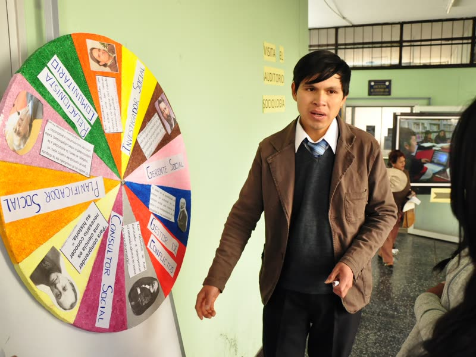

Educador con una profunda formación humanística, integridad y valores éticos. Maneja las tecnologías de la información de manera crítica y aplica conocimientos de ciencias sociales y filosofía para la transformación social en el marco de la responsabilidad universitaria.
Laboratorios de Informática y Laboratorio de Biología.
Aulas prefabricadas experimentales y aulas de recursos pedagógicos.

Haz clic en una imagen para verla en grande.
Inscríbete en el proceso de admisión 2026 y da el primer paso hacia tu programa de estudio.